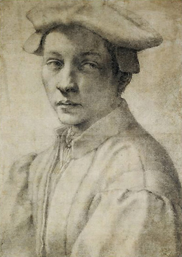

|
Michelangelo
(1475-1564)
The
British Museum has almost ninety drawings by Michelangelo, one of
the towering figures of the Italian renaissance whose artistic activities
encompassed sculpture, painting, and architecture. Underlying his
achievements in all these fields was a dedication to drawing: the
perfection of the finished work achieved only after an exhaustive
preparation of every aspect of the finished composition on paper.
This manner of working, a constant in his seventy-year career, was
central to the Florentine artistic tradition that Michelangelo learnt
in the workshop of the painters Domenico and Davide Ghirlandaio.
Michelangelo in turn passed this precept down to his pupils, as
is shown by the exhortation directed to his pupil Antonio Mini written
on one of the Museum's drawings: 'Draw, Antonio, draw, and don't
waste time'.
Left:
Michelangelo Buonarroti, Portrait of Andrea Quaratesi, black
chalk, around 1532
The
Museum's collection of his drawings is unusually complete in its
coverage of his stylistic development, with works from every decade
from 1500 until the 1560s, and in having studies related to a number
of his most important commissions: including the unfulfilled Battle
of Cascina fresco (1504-7); the Sistine chapel ceiling (1508-12)
and Last Judgement frescoes (1536-41); and the Medici chapel in
San Lorenzo, Florence (1520-34). It also includes highly finished
presentation drawings in chalk intended as gifts for friends, such
as the handsome Roman nobleman Tommaso de' Cavalieri or Michelangelo's
confidante and fellow poet Vittoria Colonna; a portrait in black
chalk of the youthful Andrea Quaratesi (the only surviving portrait
by the artist); a design for silverware; a full-size cartoon of
the Holy Family (on permanent display in Gallery 90) for a painting
by his biographer Ascanio Condivi now in the Casa Buonarroti, Florence;
and two of his intensely moving Crucifixion studies made right at
the end of his life, probably for his own private devotion.
Born
into the minor bourgeoisie Buonarroti family in Caprese, near Sansepolcro,
Michelangelo underwent formal schooling until the age of 13 (a rarity
among artists of his period). In 1488 he was apprenticed as a painter
in the workshop of the leading Florentine painters of the day, the
Ghirlandaio brothers, and the following year he joined a group of
young sculptors training in the Medici gardens in San Marco. His
precocious artistic talent was first revealed in his marble reliefs,
the Battle of the Centaurs and the Donatello-inspired Madonna of
the Stairs (both Casa Buonarroti, Florence) executed in his late
teens, and slightly later in the Bacchus (Bargello, Florence) executed
in Rome in 1496. Around the same period he painted the unfinished
panel, the Virgin and Child with St John and Angels (known as the
'Manchester Madonna'), in the National Gallery, London. Michelangelo's
artistic reputation was firmly established by the virtuoso marble
Pietà (St Peter's, Rome) completed in 1500 for the tomb of a French
Cardinal. While in Rome he also worked on the unfinished panel of
the Entombment (c.1500-1) now in the National Gallery, London.
In 1501 Michelangelo returned to Florence where he remained until
1504, completing the gigantic marble David (Accademia, Florence),
the sculpture of the Madonna and Child (Bruges, Notre Dame) and
the circular painting of the Holy Family (the 'Doni Tondo', Uffizi,
Florence). Unfulfilled commissions from this period, an oft-repeated
pattern in Michelangelo's career, include 12 marble apostles for
Florence cathedral of which only the unfinished Matthew resulted
(Accademia, Florence); two circular marble roundels of the Virgin
and Child (Bargello, Florence and Royal Academy, London); and the
Battle of Cascina fresco for the Sala del Gran Consiglio in the
Palazzo Vecchio. The latter only progressed to a cartoon (a large-scale
drawing), now destroyed, of the central section of the composition
known as the Bathers for its depiction of nude Florentine soldiers
struggling into their armour after a swim. The twisting, contorted
poses of the figures (a large pen drawing for one of them is in
the British Museum collection) were tremendously influential and
are frequently cited in contemporary paintings and prints.
In
1505 Michelangelo was summoned to Rome by Pope Julius II who commissioned
him to execute his tomb in St Peter's. The unrealistic ambition
of Michelangelo's scheme, comprising over forty statues and numerous
bronze reliefs, as well as the competing claims on the artist's
time imposed on him by Julius and successive popes, meant that the
project was doomed from the outset. What Michelangelo's sixteenth-century
biographer Ascanio Condivi coined 'the tragedy of the tomb' finally
concluded with the erection in 1545 of the severely scaled-down
monument (whose most celebrated element is the Moses) in the Roman
church of S. Pietro in Vincoli. In 1508 Pope Julius also commissioned
Michelangelo to decorate the ceiling of the Sistine Chapel, a work
completed by the end of 1512. A drawing in the Museum gives an idea
of the initial very simple scheme consisting of Apostles in the
spandrels and geometric ornamentation on the vault. This evolved
into a far more complex arrangement of fictive stone architecture
and a multitude of figures, some of which are dramatically foreshortened
like the figure of Haman whose pose is studied in a drawing in the
collection. Michelangelo's luminous red chalk studies for figures
in the ceiling (like the Museum's celebrated Adam) are among the
most sensuous representations of the male nude ever created. The
scale and grandeur of the Sistine ceiling ushered in a new type
of heroic painting, and it quickly became one of the canonical works
of the renaissance; its fame spread by drawings and engravings made
after it.
Although
Michelangelo was not the solitary genius of popular myth, his assistants
played little or no part in the creative process their input being
largely confined to minor help in the execution of works. His great
rival Raphael, by contrast, attracted some of the brightest young
artists to work for him, and with brilliant managerial skill harnessed
their talents to keep abreast of the swelling tide of papal and
private commissions that flowed into his Roman studio. Michelangelo
was temperamentally unsuited to such collaborative methods of working
(one of the reasons that so many of his commissions were left unfulfilled),
but he was on occasion ready to help less gifted artist friends
by giving them compositional and figure studies. The earliest example
of this practice is the drawings he supplied to the Venetian painter
Sebastiano del Piombo in 1516 for two projects: the Flagellation
of Christ fresco in the Borgherini chapel in S. Pietro in Montorio,
Rome; and the Raising of Lazarus altarpiece for Narbonne cathedral
(now National Gallery, London). The Museum has two studies for each
of these projects. In the early 1530s he made a cartoon of Venus
and Cupid, a slight pen-and-ink sketch for which is in the collection,
for a painting by Pontormo, and in the 1550s he also supplied drawings
to Daniele da Volterra and Condivi.
The
death of Julius in 1513 provided fresh impetus to Michelangelo's
work on his tomb, and over the next three years he sculpted the
Moses and the two unfinished Slaves (both Louvre, Paris). The election
of two Florentine popes, Leo X (1513-21) and Clement VII (1523-34),
both members of the Medici family, resulted in Michelangelo's departure
from Rome and return to Florence in 1516. He was to remain there
for the next sixteen years working on various commissions related
to the Medici family church of S. Lorenzo. Michelangelo began by
winning the coveted commission for the façade of the church in 1516,
but it never progressed beyond the design stage and was abandoned
in 1520. Around the same period (1519-20) work began on the New
Sacristy of S. Lorenzo (so-called because it was built as a pendant
to Brunelleschi's Old Sacristy of the 1420s) built as a mausoleum
for the newly deceased Medici dukes Lorenzo of Urbino and Giuliano
of Nemours - the Capitani- , along with their fifteenth-century
ancestors Lorenzo the Magnificent and his brother Giuliano - the
Magnifici. Four drawings in the collection document the evolution
of Michelangelo's ideas for the tombs, the earliest of which shows
a four-sided free-standing monument. The interior and the Capitani
wall-tombs, consisting of seated idealised representations of the
deceased with reclining allegorical figures of the Times of Day,
were largely completed before Michelangelo's departure for Rome
in 1534. The Magnifici tomb was never built, the only surviving
element from it is the unfinished marble of the Madonna and Child.
While in Florence Michelangelo was also commissioned by Clement
VII in 1523 to design at S. Lorenzo a public library, the Biblioteca
Laurenziana, to house the library of his uncle Lorenzo the Magnificent.
Two drawings in the Museum are related to the library's vestibule:
a pen-and-ink elevation, and a study in the same medium of the doorway.
While in Florence he sculpted the Risen Christ (1519-20) for the
Roman church of S. Maria sopra Minerva, and the Victory (Palazzo
Vecchio, Florence) created in the first half of the 1520s probably
for the tomb of Julius II, but left in his Florentine studio until
his death.
In 1534 Michelangelo was called back to Rome by Clement VII who
commissioned him shortly before his death to fresco the altar wall
of the Sistine Chapel. Clement's successor, Paul III, endorsed the
idea and work commenced on the Last Judgment fresco in the autumn
of 1536 and it was finished by the end of 1541. The Museum has an
early compositional study in black chalk for the right-hand side
of the composition, and four figure studies in the same medium.
The fresco is profoundly different in spirit from the joyous physicality
of the Sistine Chapel ceiling, the darker and more introspective
nature of the Last Judgement engendered by its theme of Redemption
and Damnation, and also by the more pessimistic outlook of the sixty-year
old artist and of the Catholic Church itself, still bruised by the
Sack of Rome a decade or so earlier. The nudity of Michelangelo's
figures was criticised by contemporary critics, most famously by
the sometime pornographer Pietro Aretino, and in 1558 Pope Paul
IV ordered Daniele da Volterra to paint draperies over offending
parts of the fresco. The weighty, almost ponderous muscularity of
Michelangelo's figures in the Last Judgement became even more exaggerated
in his last fresco decoration in the Pauline Chapel in the Vatican
(1542-5). The composition and narrative of the two frescoes, the
Conversion of St Paul and the Crucifixion of St Peter, are highly
formalised, the rhetorical gestures of the protagonists and the
settings deliberately abstracted from reality. The deeply spiritual,
almost visionary quality of Michelangelo's late painting style is
also found in his celebrated series of Crucifixion studies (two
of which are in the Museum), and in the two unfinished Pietà marbles
sculpted in c.1547-55 (Museo del Opera del Duomo, Florence) and
the Rondanini Pietà of c. 1552/3-64 (Castello, Sforzesco, Milan).
In the last two decades of his life Michelangelo was also busy on
architectural projects in Rome: designing the Piazza del Campidoglio
and the Palazzo Farnese; he also became the chief architect to St
Peter's in 1546.
Michelangelo
died in Rome aged eighty-nine, his body was then smuggled to Florence
and buried with elaborate honours in S. Croce. No other Italian
of the renaissance period is better known to us: his broken-nosed
countenance familiar from paintings, drawings, medals and busts
(a good example of the latter by Daniele da Volterra is in the Ashmolean
Museum, Oxford); numerous letters and the mythologizing biographies
of Condivi (1553) and Vasari (1550 and 1564) providing much material
to analyse his character. Michelangelo's influence was enormous
even without a formal school to continue and promulgate his style,
due in large part to the large number of reproductive engravings
taken from his works (a good selection of these are in the Department).
Copies after his work by artists as diverse as Sir Peter Paul Rubens
and William Blake in the Museum's collection give some idea of his
lasting influence. Michelangelo was perhaps the most brilliant draughtsman
of the male nude ever to have lived, and it is perhaps this aspect
of his work that had the most durable legacy as his idealised vision
of the male form became enshrined in the academic art tradition
throughout Europe well into the last century.
Works
in Other UK Collections
London British Library (letters by Michelangelo)
National Gallery (two early paintings)
Royal Academy (Taddei Tondo marble)
Victoria and Albert (wax models)
Ashmolean Museum, Oxford (large collection of drawings and a grisaille)
Fitzwilliam Museum, Cambridge (a drawing)
Royal collection, Windsor Castle (drawings)
Further
Reading
The bibliography on Michelangelo is vast, and the following list
is confined to works written in English on his drawings alone. For
a good general bibliography see the entry on the artist in the Grove
Dictionary of Art.
J.
Wilde, Italian Drawings in the British Museum, Michelangelo and
His Studio, British Museum Publications, 1953
J.A. Gere and N. Turner, Drawings by Michelangelo from English
Collections, British Museum Publications, 1975
M. Hirst, Michelangelo and his Drawings, Yale, 1988
P. Joannides, Michelangelo and His Influence: Drawings from Windsor
Castle, 1996
|